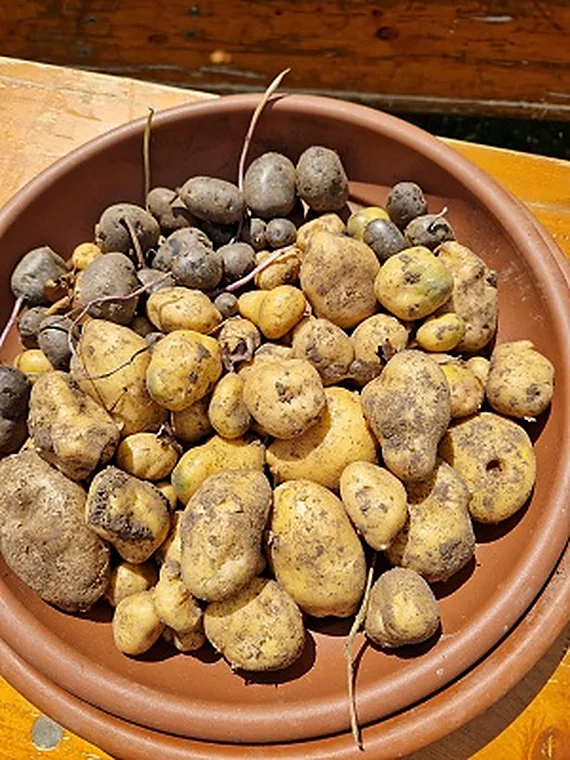
Einblick ins Schuljahr
Besuch auf unserem Schulacker
Die Kinder zeigten Gästen von Acker e. V. und dem Landratsamt, was sie gesät und gepflegt hatten. Auch der Bürgermeister schaute vorbei.
Zum Beitrag im JahresrückblickArchiv
Auf dem Schulacker, bei der Trommelwoche und im Schullandheim gab es für die Kinder viel zu entdecken.

Einblick ins Schuljahr
Die Kinder zeigten Gästen von Acker e. V. und dem Landratsamt, was sie gesät und gepflegt hatten. Auch der Bürgermeister schaute vorbei.
Zum Beitrag im Jahresrückblick23.07.2025
Die Kinder zeigten Gästen von Acker e. V. und dem Landratsamt, was sie gesät und gepflegt hatten. Auch der Bürgermeister schaute vorbei.
Die Kinder zeigten, wie sie gesät, gepflegt und geerntet hatten. Auch der Bürgermeister schaute vorbei und unterstützte den Acker mit einer Spende.
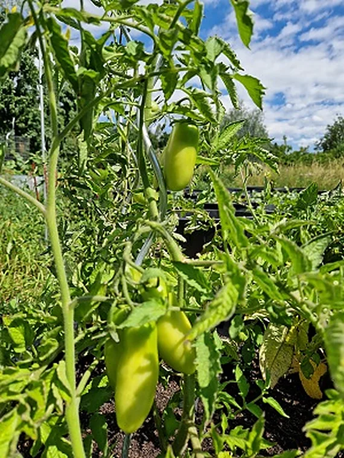
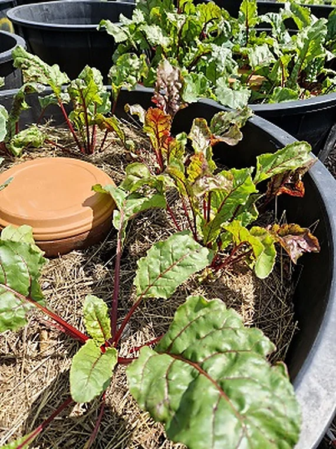
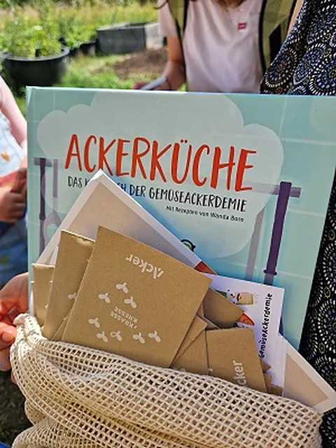
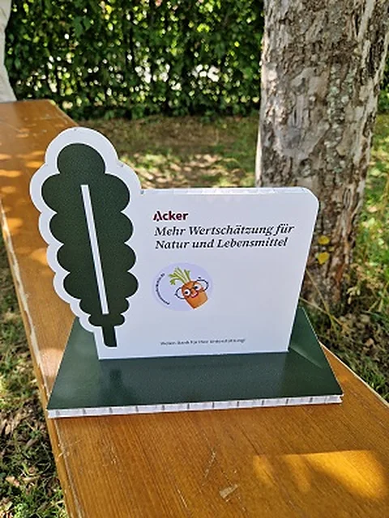
16.07.2025
Beim Laufen, Werfen und Springen haben sich die Kinder viel Mühe gegeben.
Vor den Wettkämpfen haben wir uns auf dem Basketballplatz aufgewärmt. Dann ging es an die Stationen. Herzlichen Glückwunsch an alle Kinder zu euren Urkunden!
Mai 2025
Die Musik-AG der ersten und zweiten Klassen lud zu einem kleinen Konzert ein.
April 2025
Die Klassen feierten Ostern mit einem gemeinsamen Frühstück.
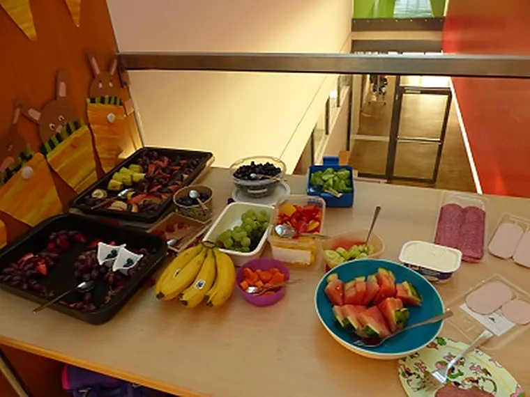
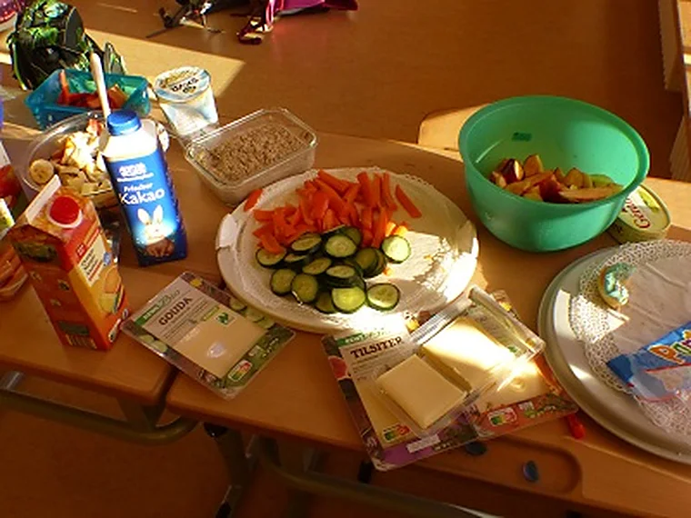
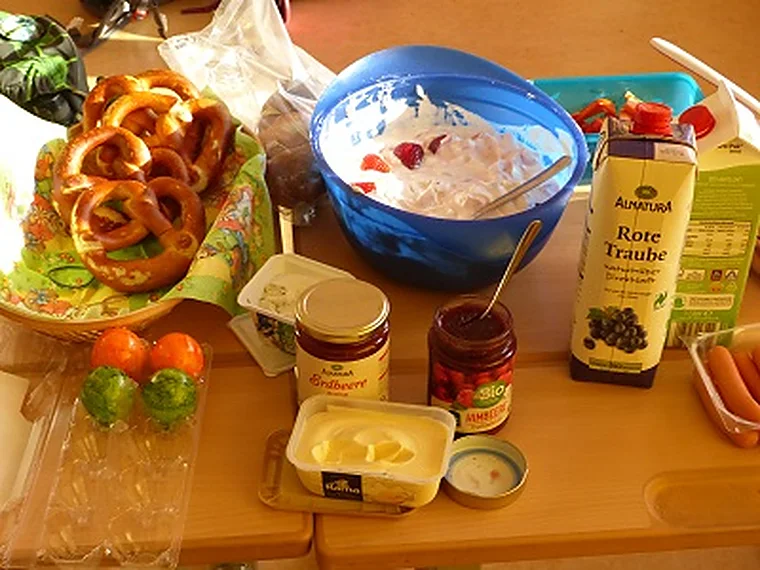
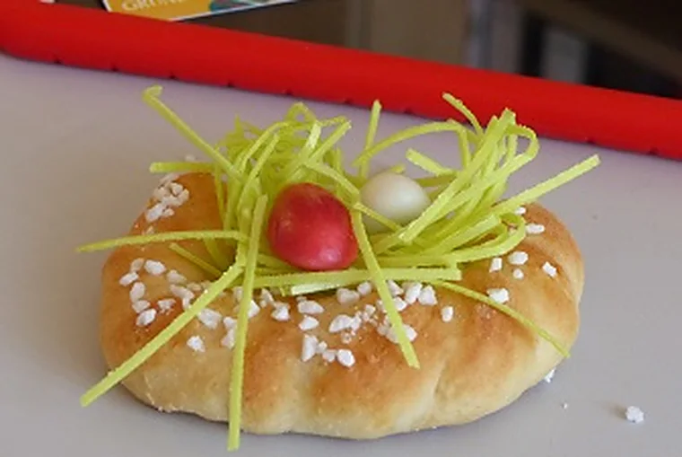
April 2025
Die vierten Klassen sammelten ihr Wissen über München in selbst gestalteten Faltbüchern.
April 2025
Für den Malwettbewerb der Gemeinde suchten die vierten Klassen nach Gebäuden und Landschaften als Motive.
28.02.2025
Das Münchner Prinzenpaar und seine Garde überraschten die Schule. Anschließend tanzten die Kinder bei der Polonaise mit.
Das Prinzenpaar tanzte einen Walzer, die Garde trat auf und am Ende zogen alle gemeinsam durch die Aula. Danach gab es Krapfen.
Februar 2025
Der Elternbeirat organisierte die Büchertauschbörse. Die Kinder konnten bis zu drei Bücher tauschen.
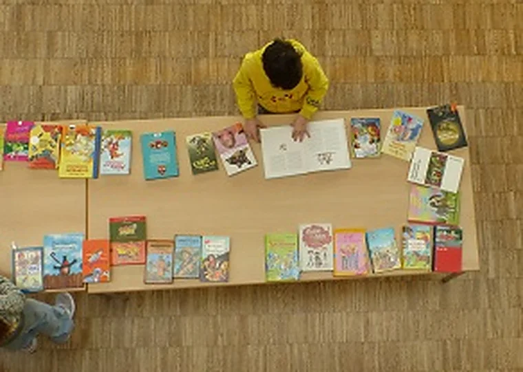
Dezember 2024
Die Klassen kamen in der Adventszeit zu gemeinsamen Feiern zusammen.
Dezember 2024
In der Projektwoche übten die Klassen gemeinsame Rhythmen und Lieder. Elternbeirat und Förderverein unterstützten die Aktion.
Bei der Generalprobe kamen die Klassen zusammen und trommelten, sangen und spielten im selben Takt. Der Elternbeirat half bei der Organisation, der Förderverein bei der Finanzierung.
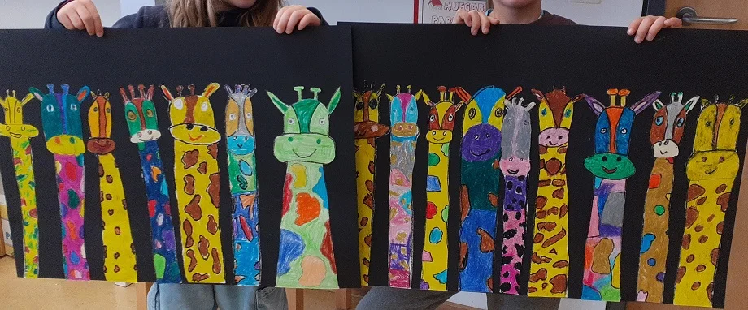
Dezember 2024
Kinder und Eltern bastelten zusammen Weihnachtsschmuck. Dabei kamen viele verschiedene Ideen zusammen.
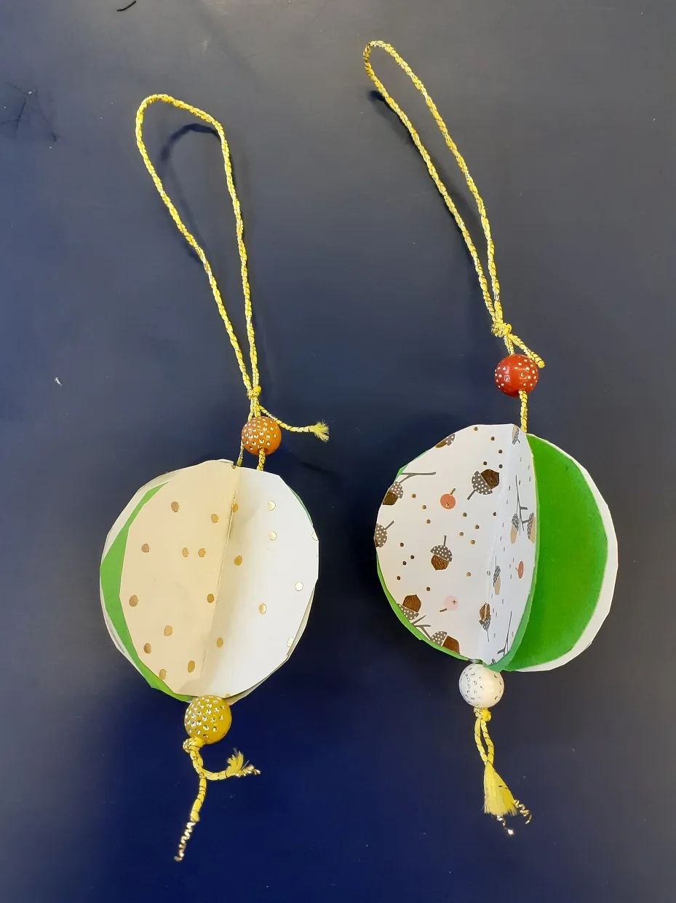
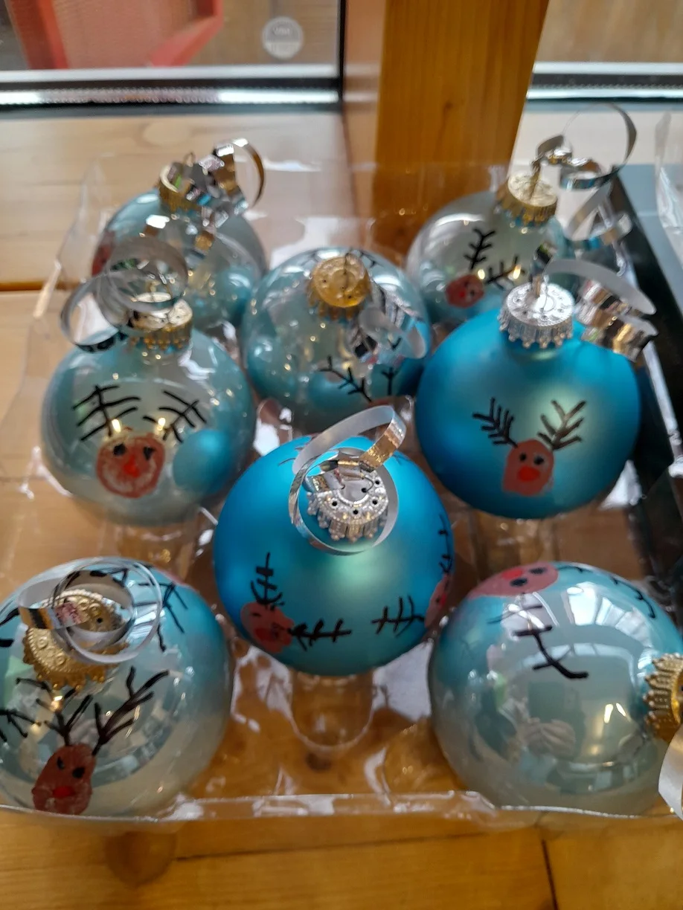
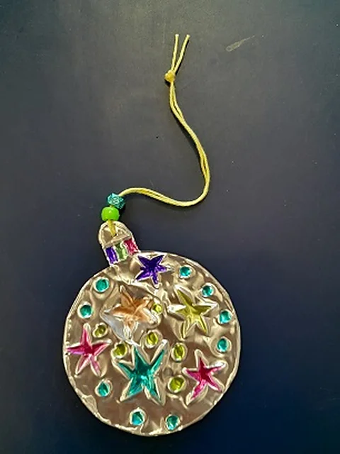
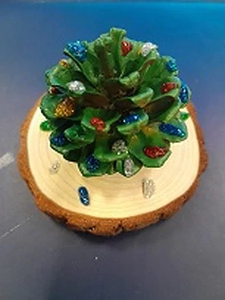
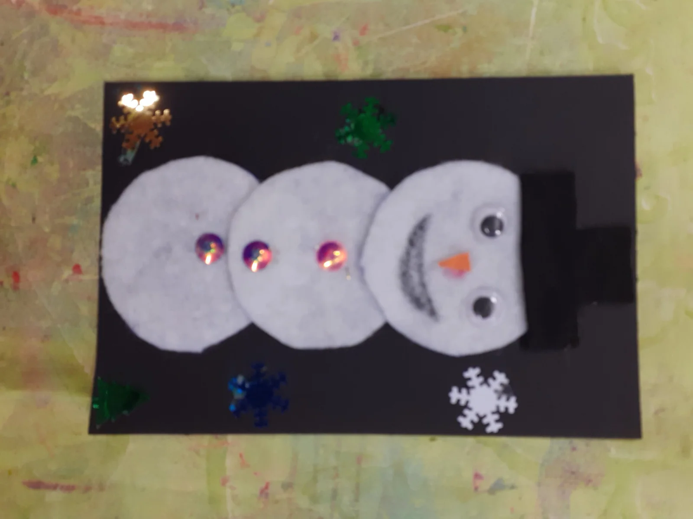
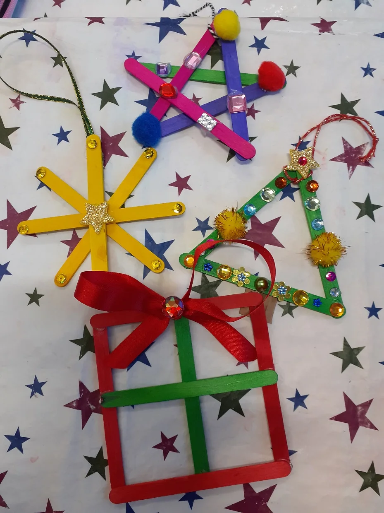
15.11.2024
Der Bürgermeister las Geschichten vor. Die Gemeindebücherei ergänzte den Vormittag mit zwei Bilderbuchkinos.
Der Bürgermeister las aus den „Olchis“ und aus „Der Tag, an dem ich in ein Märchen fiel“. Die Gemeindebücherei brachte zwei Bilderbuchkinos mit.
Oktober 2024
In mehreren Klassen wurde gefeiert. Wer wollte, kam in Tracht.
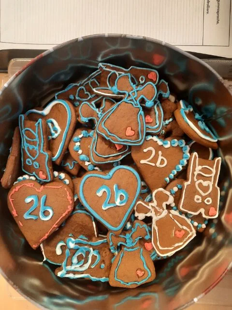
30.09.2024
Die vierten Klassen fuhren bis zum 2. Oktober in die Jugendherberge. Lagerfeuer, Disco und die Vorführung einer Falknerin gehörten zur Fahrt.
September 2024
Nach den Sommerferien begrüßte die Schule die neuen Kinder in zwei ersten Klassen.
Der Rückblick erinnert an den Informationsabend für die Familien der künftigen Erstklässler.
Die Klasse gestaltete ein Alphabet mit Fotografien.